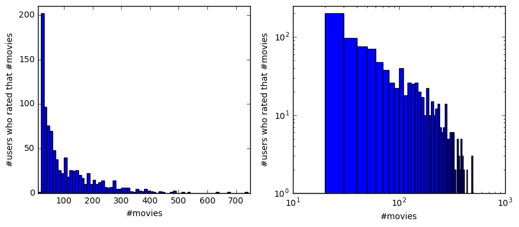

Recommendation System
Apr 29, 2016In the following notebook we will attempt to determine the recommendations for some specified users. In other words we will pick some random users and get movie recommendations for them.
The movielens dataset contains real movie preference data used for a variety of algorithmic tests
(There are other datasets available as well at http://grouplens.org/datasets/ .) In this case we will use this small data set (see README) at this url
http://files.grouplens.org/datasets/movielens/ml-100k/
Here are just two of the files:
u.item: list containing movie ids and titles (plus other info)
u.data: contains 100,000 ratings (user id, movie id, rating, timestamp)
Get the movies
The first line of u.item has ‘|’-delimited fields, starting with
1|Toy Story (1995)|01-Jan-1995|...
...
Only the first two fields will be used here, so it can be loaded into a movies dict as
|
|
let’s check how many movies there are in the dictionary
|
|
1682
Get the data containing the ratings
The file u.data has a list of tab-delimited user_id/movie_id/rating/timestamp lines
196 242 3 881250949
186 302 3 891717742
...
and can be loaded into a ratings dict as
|
|
How many users?
|
|
943
Before we start let’s show a small sample, just to have an idea
A dictionary of movie reviewers and their ratings of a small set of movies
|
|
Hmm, what has Toby reviewed?
|
|
{'Snakes on a Plane': 4.5, 'Superman Returns': 4.0, 'You, Me and Dupree': 1.0}
Import libraries
|
|
Out of curiosity, let’s see how many they rated.
|
|
min=19, max=736, mean=105.72, std=100.57, median=64.0
(1, 250)

The result, a rough power law, is ratings of 1682 movies by 943 users, an average of about 106 ratings per user (ranging from 19 to 736, with a median of 64).
Define functions
Next, we’ll define the similarity measure function $$ s{ij}=\frac {1}{1 + d^{2}{ij}} $$. It returns the similarity score of two reviewers.
|
|
We also need to define another function to get recommendations by using a weighted average of every other person’s ratings, weighted according to that person’s similarity to another person. Suppose person $i$ has similarity $s_i$ to you, and gives rating ${r_i(m)}$ to movie $m$ that you haven’t seen, then that person will contribute ${s_i⋅r_i(m)}$ to your likely preference for movie $m$, so that others’ ratings are weighted in proportion to their similarity to you. Then we sum on $i$ over all those who have rated movie $m$, and divide by the same sum over the $s_i$ to give the expected value of your rating of movie $m$:
$$ E[rm] = \frac{\sum{i\:|\:i\:rated\:m} s_i \cdot rm(i)}{\sum{i\:|\:i\:rated\:m} s_i} $$
This equation is implemented in the function below, and gives the expected rating of all movies one hasn’t seen:
|
|
Let’s play…
Now let’s say we would like to view the top ten recommendations for users 2 and 167.
|
|
([('Santa with Muscles (1996)', 5.0),
("Someone Else's America (1995)", 5.0),
('Star Kid (1997)', 5.0),
('Saint of Fort Washington, The (1993)', 5.0),
('Little City (1998)', 5.0),
('Great Day in Harlem, A (1994)', 5.0),
('Entertaining Angels: The Dorothy Day Story (1996)', 5.0),
('The Deadly Cure (1996)', 5.0),
('Prefontaine (1997)', 5.0),
('Marlene Dietrich: Shadow and Light (1996) ', 5.0)],
[('Santa with Muscles (1996)', 5.0),
("Someone Else's America (1995)", 5.0),
('Saint of Fort Washington, The (1993)', 5.0),
('Little City (1998)', 5.0),
('They Made Me a Criminal (1939)', 5.0),
('Boys, Les (1997)', 5.0),
('Prefontaine (1997)', 5.0),
('Marlene Dietrich: Shadow and Light (1996) ', 5.0),
('Entertaining Angels: The Dorothy Day Story (1996)', 5.0),
('Great Day in Harlem, A (1994)', 5.0)])
Also we want to know their Pearson similarity
|
|
1.0
From above we can say that users 2 and 167 are highly correlated by Pearson, and get similar recommendations.
|
|
[((4, 36), -1.0), ((4, 415), -1.0), ((36, 415), 1.0)]
Users 36 and 415 are highly correlated, and both negatively correlated with user 4, and that is reflected in their recommendations.